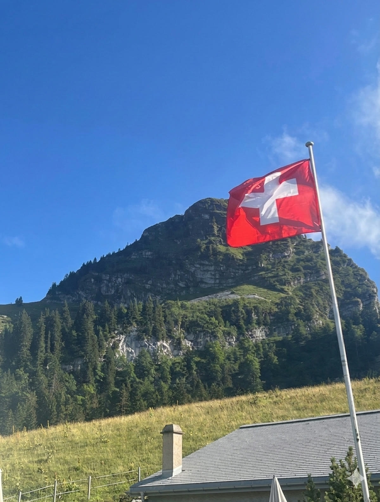

Randonnées · Col de Jaman
Marcher avant
de s'asseoir.
Trois sentiers, un seul col. La Dent de Jaman en trente minutes, les Rochers de Naye en crête, les narcisses des Avants en mai. Et à l'arrivée, une terrasse qui attend.
Dent de Jaman depuis la gare de Jaman
De dénivelé jusqu'au sommet
De crête jusqu'aux Rochers de Naye
Altitude du Col de Jaman, retour à table
Itinéraires
Trois sentiers.
Une seule évidence : redescendre ici.
Une montée courte et franche. Une traversée de crête pour les jambes solides. Une balade de printemps pour prendre son temps. Peu importe le rythme choisi, le sentier ramène toujours au même endroit.

01 · Montée courte
La Dent de Jaman.
Trente minutes, tout en haut.
Depuis la gare de Jaman, le sentier grimpe sec sur 363 mètres de dénivelé. Raide, court, sans détour — et un panorama à 360° sur le Léman qui justifie chaque pas.

02 · Traversée de crête
Vers les Rochers de Naye.
Trois heures quarante-cinq, au-dessus de tout.
Le sentier suit la ligne de crête depuis le col, passe la Dent de Jaman, les Grottes de Naye, la Grande Chaux de Naye — et grimpe jusqu'à 2 042 mètres. La descente finale, technique, se négocie aux chaînes.

03 · Balade de saison
Le sentier des Narcisses.
Les Avants, fin mai.
Une heure et demie de marche facile, en forêt puis en prairie, jusqu'à ce que les narcisses blanchissent les pentes. Le meilleur terrain pour une sortie en famille, sans dénivelé qui pique.

— Sur la crête
Le bruit reste
en bas.
À cette altitude, le lac devient un miroir et Montreux un point sur la carte. On ne marche pas pour arriver vite. On marche pour ça.

Accès et sécurité
Simple à préparer,
simple à profiter.
- Le train MOB relie Montreux à Jaman, Caux et Les Avants — trois points de départ, une seule ligne.
- La météo tourne vite en altitude : partir tôt, garder une couche chaude.
- Semelles crantées conseillées sur les tronçons raides et minéraux, surtout vers les Rochers de Naye.
- En cas de doute, le chemin le plus court passe toujours par la terrasse du Manoïre.
Retour au Manoïre
La randonnée finit bien
quand la table suit.
Une terrasse, une carte franche, et l'impression d'avoir mérité la suite. Le Manoïre est le point d'atterrissage naturel de chaque sentier du col.